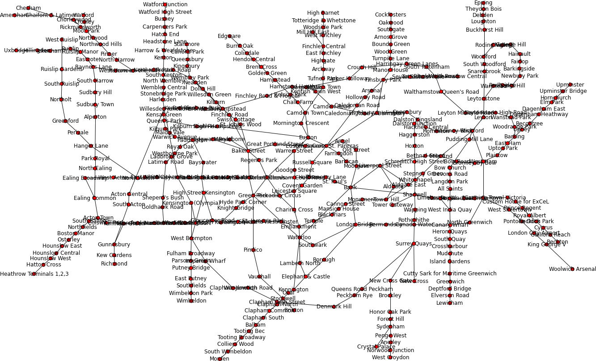
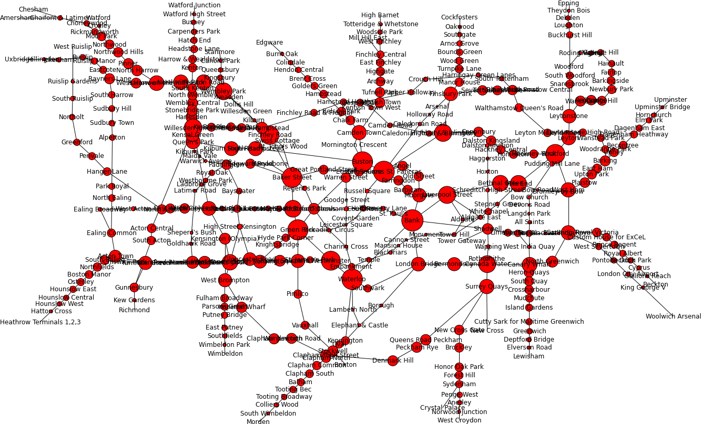

Digging around the internet I managed to find a partial list of all stations on the standard London Underground map. I cleaned up the dataset, adding some of the missing stations, and converted it to a Python NetworkX graph. You can download this notebook and the data here. (I'd recommend maximising the window to be able to see graphs properly)
In [1]: import networkx as nx
import matplotlib.pyplot as plt
from tube_graph import TubeGraph, pos
%matplotlib inline
plt.figure(1, figsize=(26,15))
nx.draw(TubeGraph, pos, node_size=60,font_size=12)
plt.show()

In [2]: nx.number_of_edges(TubeGraph), nx.number_of_nodes(TubeGraph), nx.is_connected(TubeGraph) Out[2]: (415, 358, True)
In [3]: MinTubeGraph = nx.minimum_spanning_tree(TubeGraph)
plt.figure(2, figsize=(26,15))
nx.draw(MinTubeGraph, pos, node_size=60,font_size=12)
plt.show()
nx.number_of_edges(MinTubeGraph), nx.number_of_nodes(MinTubeGraph)
Out[3]: (357, 358)
NetworkX includes the PageRank algorithm used by Google to rank websites based on the number of links that point to them. The PageRank theory holds that an imaginary surfer who is randomly clicking on links will eventually stop clicking. The probability, at any step, that the person will continue is a damping factor d. It is generally assumed that the damping factor will be set around 0.85. We can do a similar thing with the tube. This can be interpretted as the probability of arriving at a particular station after a travelling the tube map, randomly, for a large amount of time.
In [4]: page_ranked = nx.pagerank(TubeGraph)
sorted(page_ranked.items(), key=lambda x: -page_ranked[x[0]])[:10]
Out[4]: [("King's Cross St. Pancras", 0.006565815944375528),
('Baker Street', 0.006204469162589465),
("Earl's Court", 0.005341221712708357),
('Canning Town', 0.005266790738864322),
('Willesden Junction', 0.005231936317303184),
('Bank', 0.00519210101926481),
('Waterloo', 0.005136216913126235),
('Stratford', 0.0051171631102412555),
('Turnham Green', 0.004983717996718398),
('Blackhorse Road', 0.004922198282483076)]
This is expected since, the graph centre is at King's Cross St. Pancras
In [5]: nx.center(TubeGraph) Out[5]: ["King's Cross St. Pancras"]
Another very interesting property of the nodes in a graph is the betweenness centrality. To compute the betweenness centrality for a node, v. Compute all shortest (s,t) paths for s,t in graph. The betweenness centrality for a node is then the propotion of these paths that pass through v.
In [6]: betweeness_centrality = nx.betweenness_centrality(TubeGraph)
sorted_betweeness_centrality = sorted(betweeness_centrality.items(),
key=lambda x: -betweeness_centrality[x[0]])
sorted_betweeness_centrality[:10]
Out[6]:
[('Bank', 0.23861248366016607),
("King's Cross St. Pancras", 0.22808166604078223),
('Waterloo', 0.22020558282242736),
('Green Park', 0.21341452512139916),
('Euston', 0.21243808821469118),
('Baker Street', 0.20248929443528604),
('Stratford', 0.1903232266689447),
('Westminster', 0.18925449268783218),
('Finchley Road', 0.18108770008968275),
('Willesden Junction', 0.16214946124421145)]
(This looks familiar, I often find myself changing at Bank and walking for a long time underground!) We can then plot a graph graph, with vertex size corresponding to betweeness-centrality. (Bank is largest).
In [7]: from math import cos, sin, pi, log
from random import random
plt.figure(3, figsize=(26,15))
node_sizes = [7000*betweeness_centrality[v] for v in TubeGraph]
nx.draw(TubeGraph, pos, node_list=betweeness_centrality.keys(),
node_size=node_sizes, font_size=12)
plt.show()

Full IPython notebook here.